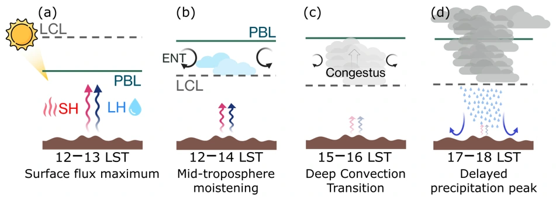
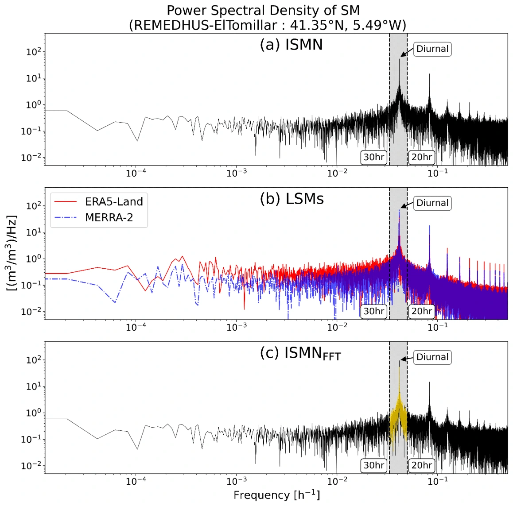
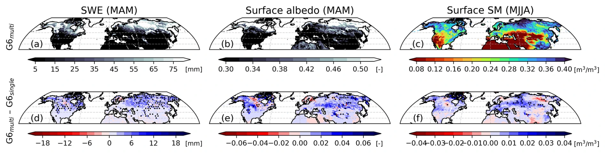

Hydrology and Earth System Sciences · 2026
Ground observations, satellites and reanalyses tell different stories about the timing of afternoon rain.
Gyuyeon Choi, Eunkyo Seo, Paul A. DirmeyerWe study how water and heat move between the land and the air.
Explore our research 0–0.6 m³/m³
0–0.6 m³/m³The clock replays one complete UTC day. SMAP’s position is estimated from archived half-orbit footprints. Coloured land cells accumulate as the satellite passes, using the matching morning or evening soil-moisture composite (m³/m³). IMERG shows precipitation rate (mm/h) for the half-hour containing the clock time. The globe samples NASA imagery on a 0.25° grid. The IMERG product uses a 0.1° grid.
SMAP footprints · Soil moisture · IMERG · NASA GIBS
Ground observations, satellites and reanalyses tell different stories about the timing of afternoon rain.
Gyuyeon Choi, Eunkyo Seo, Paul A. Dirmeyer
